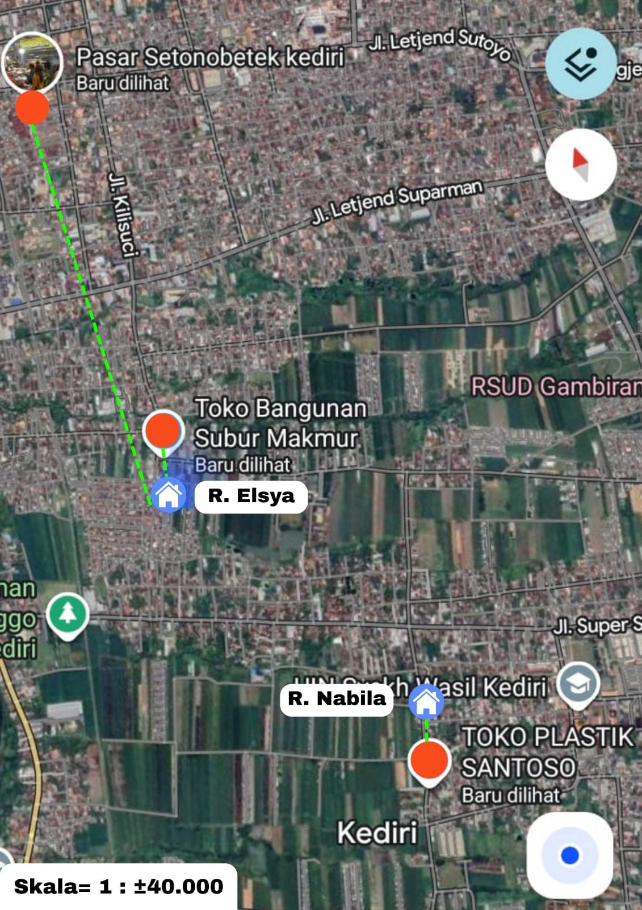

Selamat datang di halaman informasi seputar Nabisya Salted Egg.
Jelajahi berbagai informasi secara interaktif mulai dari inovasi,
proses pembuatan, keunggulan produk hingga perbedaan produk kami.
Filosofi, Pengertian & Inovasi
Telur asin merupakan produk olahan pangan yang diawetkan menggunakan garam untuk memperpanjang masa simpan dan menghasilkan rasa gurih khas. Proses ini juga memberikan perubahan pada tekstur dan aroma telur sehingga menjadi lebih menarik untuk dikonsumsi.
Produk Nabisya Salted Egg menghadirkan inovasi melalui penambahan rempah berupa bawang putih dan ketumbar. Inovasi ini bertujuan untuk menciptakan cita rasa yang lebih kaya serta memberikan pengalaman baru dalam menikmati telur asin.
Filosofi dari produk ini adalah menggabungkan tradisi dan inovasi, di mana makanan sederhana dapat dikembangkan menjadi produk yang lebih modern dan diminati oleh berbagai kalangan.
Lokasi Bahan Baku

Bahan baku pembuatan telur asin diperoleh dari beberapa lokasi yang mudah dijangkau. Bahan utama seperti telur bebek, garam krosok, dan rempah-rempah yaitu bawang putih dan ketumbar diperoleh dari pasar tradisional Setono Betek sedangkan bahan tambahan seperti bubuk batu bata merah diperoleh dari toko bangunan Subur Makmur dan packaging yang diperoleh dari toko plastik Santosa.
Pemilihan lokasi pembelian didasarkan pada kelengkapan bahan, kemudahan akses, serta efisiensi biaya. Hal ini bertujuan agar seluruh proses produksi dapat berjalan dengan optimal.
Proses Pembuatan

Proses pembuatan dimulai dengan pemilihan telur bebek berkualitas, kemudian dibersihkan untuk menjaga kebersihan dan kualitasnya. Setelah itu, dibuat adonan pasta dari campuran bubuk batu bata dan garam yang diberi air hingga sesuai.
Telur dilapisi dengan pasta tersebut secara merata, dengan sebagian diberi tambahan rempah sebagai inovasi. Selanjutnya, telur disimpan selama kurang lebih 5-14 hari untuk proses pengasinan.
Setelah itu, telur semi kukus selama 2 jam hingga matang. Kami memilih proses semi kukus agar hasil telur padat dan kenyal, namun tidak berair dan tidak kopong. Juga dengan tujuan agar masa simpan lebih tahan lama maksimal sampai 10 hari disuhu ruang. Kemudia angkat dan dinginkan lalu Nabisya Salted Egg siap dikonsumsi.
Keunggulan Produk
Nabisya Salted Egg memiliki keunggulan berupa cita rasa gurih khas dengan tambahan variasi rempah yang memberikan sensasi berbeda. Produk ini juga memiliki daya simpan yang lebih lama dibandingkan telur biasa hingga maksimal 10 hari di suhu ruang.
Selain itu, bahan yang digunakan mudah diperoleh dan proses pembuatannya relatif sederhana sehingga berpotensi untuk dikembangkan menjadi produk usaha. Kemasan yang praktis juga mendukung keamanan dan kemudahan dalam penyimpanan.
Perbedaan Berempah & Tidak
Telur asin berempah memiliki rasa yang lebih kaya dengan tambahan cita rasa dari bawang putih dan ketumbar, serta aroma yang lebih harum. Sementara itu, telur asin tanpa rempah memiliki rasa gurih asin yang lebih sederhana dan khas.
Dari segi tekstur dan warna, keduanya tidak memiliki perbedaan yang signifikan karena menggunakan proses dasar yang sama. Perbedaan utama terletak pada rasa dan aroma yang dihasilkan.